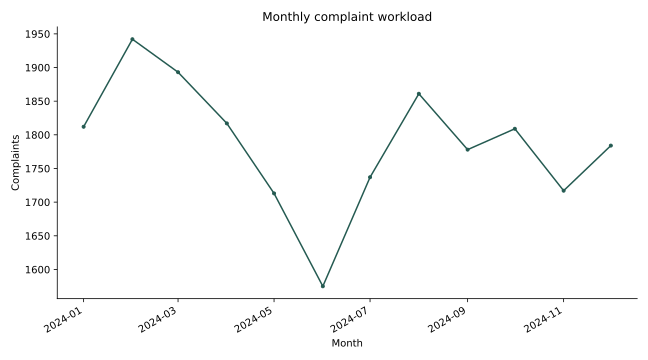
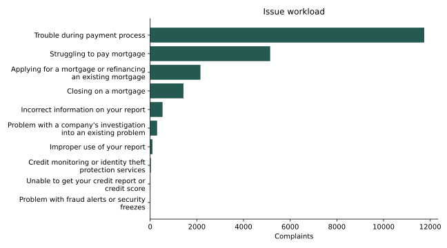
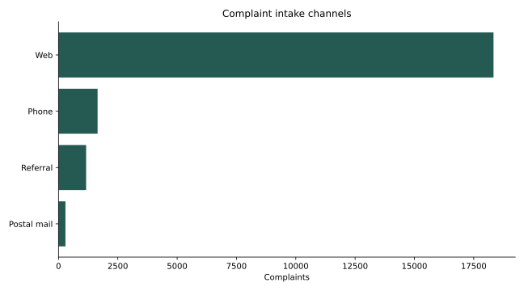

DANIEL UMEADI · SQL
Mortgage complaint operations
Results
21,438 mortgage complaints fall within 2024. The two largest issues account for 78.8% of workload. 240 of 21,438 known timeliness labels indicate a late response (1.12%). The busiest month is 2024-02 with 1,942 complaints.
Recommended next step
Prioritize the two largest issue workflows for review. Monitor volume alongside late-response counts and denominators. Investigate forwarding delays separately from company response performance.
Scope and limits
CFPB mortgage complaints received in 2024, using the historical snapshot downloaded October 10, 2026. Local date filtering excludes out-of-year records. These are public complaints, not a representative customer survey or verified wrongdoing. Volume is not exposure-adjusted risk. Timeliness is a response label, not evidence of resolution. Forwarding measures receipt-to-sending calendar days; missing and negative intervals are excluded from lag statistics. Unknown timeliness is excluded from rate denominators. Only aggregates are published.



Monthly — results table
| month | complaints | known_timeliness | late_count | late_rate | workload_share | growth_rate | rolling_three_month_mean |
|---|---|---|---|---|---|---|---|
| 2024-01-01 | 1812 | 1812 | 12.000 | 0.007 | 0.085 | NaN | NaN |
| 2024-02-01 | 1942 | 1942 | 14.000 | 0.007 | 0.091 | 0.072 | NaN |
| 2024-03-01 | 1893 | 1893 | 17.000 | 0.009 | 0.088 | -0.025 | 1,882.333 |
| 2024-04-01 | 1817 | 1817 | 16.000 | 0.009 | 0.085 | -0.040 | 1,884.000 |
| 2024-05-01 | 1713 | 1713 | 15.000 | 0.009 | 0.080 | -0.057 | 1,807.667 |
| 2024-06-01 | 1575 | 1575 | 13.000 | 0.008 | 0.073 | -0.081 | 1,701.667 |
| 2024-07-01 | 1737 | 1737 | 32.000 | 0.018 | 0.081 | 0.103 | 1,675.000 |
| 2024-08-01 | 1861 | 1861 | 23.000 | 0.012 | 0.087 | 0.071 | 1,724.333 |
| 2024-09-01 | 1778 | 1778 | 23.000 | 0.013 | 0.083 | -0.045 | 1,792.000 |
| 2024-10-01 | 1809 | 1809 | 22.000 | 0.012 | 0.084 | 0.017 | 1,816.000 |
| 2024-11-01 | 1717 | 1717 | 36.000 | 0.021 | 0.080 | -0.051 | 1,768.000 |
| 2024-12-01 | 1784 | 1784 | 17.000 | 0.010 | 0.083 | 0.039 | 1,770.000 |
Issues — results table
| issue | complaints | known_timeliness | late_count | late_rate | workload_share | cumulative_share |
|---|---|---|---|---|---|---|
| Trouble during payment process | 11743 | 11743 | 95.000 | 0.008 | 0.548 | 0.548 |
| Struggling to pay mortgage | 5142 | 5142 | 34.000 | 0.007 | 0.240 | 0.788 |
| Applying for a mortgage or refinancing an existing mortgage | 2154 | 2154 | 63.000 | 0.029 | 0.100 | 0.888 |
| Closing on a mortgage | 1427 | 1427 | 41.000 | 0.029 | 0.067 | 0.955 |
| Incorrect information on your report | 531 | 531 | 4.000 | 0.008 | 0.025 | 0.979 |
| Problem with a company's investigation into an existing problem | 297 | 297 | 2.000 | 0.007 | 0.014 | 0.993 |
| Improper use of your report | 97 | 97 | 1.000 | 0.010 | 0.005 | 0.998 |
| Credit monitoring or identity theft protection services | 30 | 30 | 0.000 | 0.000 | 0.001 | 0.999 |
| Unable to get your credit report or credit score | 11 | 11 | 0.000 | 0.000 | 0.001 | 1.000 |
| Problem with fraud alerts or security freezes | 6 | 6 | 0.000 | 0.000 | 0.000 | 1.000 |
Channels — results table
| channel | complaints | known_timeliness | late_count | late_rate | workload_share |
|---|---|---|---|---|---|
| Web | 18333 | 18333 | 211.000 | 0.012 | 0.855 |
| Phone | 1648 | 1648 | 23.000 | 0.014 | 0.077 |
| Referral | 1164 | 1164 | 4.000 | 0.003 | 0.054 |
| Postal mail | 293 | 293 | 2.000 | 0.007 | 0.014 |
Responses — results table
| response | complaints | known_timeliness | late_count | late_rate | workload_share |
|---|---|---|---|---|---|
| Closed with explanation | 20321 | 20321 | 168.000 | 0.008 | 0.948 |
| Closed with non-monetary relief | 595 | 595 | 4.000 | 0.007 | 0.028 |
| Closed with monetary relief | 460 | 460 | 6.000 | 0.013 | 0.021 |
| Untimely response | 62 | 62 | 62.000 | 1.000 | 0.003 |
Forwarding — results table
| forwarding_days | complaints | cumulative_share |
|---|---|---|
| 0 | 18120 | 0.845 |
| 1 | 774 | 0.881 |
| 2 | 415 | 0.901 |
| 3 | 309 | 0.915 |
| 4 | 248 | 0.927 |
| 5 | 258 | 0.939 |
| 6 | 251 | 0.950 |
| 7 | 169 | 0.958 |
| 8 | 105 | 0.963 |
| 9 | 66 | 0.966 |
| 10 | 64 | 0.969 |
| 11 | 62 | 0.972 |
| 12 | 63 | 0.975 |
| 13 | 41 | 0.977 |
| 14 | 59 | 0.980 |
Quality — results table
| source_rows | complaints | known_timeliness | late_count | unknown_timeliness | negative_forwarding | missing_forwarding | median_forwarding_days | p90_forwarding_days |
|---|---|---|---|---|---|---|---|---|
| 21473 | 21438 | 21438 | 240.000 | 0 | 0 | 0 | 0.000 | 2.000 |